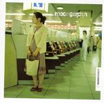

| Artist: | Moongarden |
| Title: | Round Midnight |
| Label: | Galileo Records 73655 |
| Length(s): | 54 minutes |
| Year(s) of release: | 2004 |
| Month of review: | [01/2005] |
| 1) | Round Midnight | 7.48 |
| 2) | Wounded | 7.25 |
| 3) | Killing The Angel | 4.53 |
| 4) | Lucifero | 6.36 |
| 5) | Slowmotion Streets | 5.47 |
| 6) | Learning To Live Underground | 10.24 |
| 7) | Coda: Psychedelic Subway Ride | 1.56 |
| 8) | Nightmade Concrete | 5.42 |
| 9) | Oh, By The Way, We're So Many In This City And So Damn Alone | 1.54 |
Wounded is a more acoustic piece, which has a certain Beatles/Spock's Beard feel. Slowly the song gets underway with its melancholy vocals, and at the end wailing guitar. With Killing The Angel Palleschi shows his versatility and vocal presence. He really carries the song. The middle part is rather panicky. And an excellent finale.
With Lucifero the Hogarth-era Marillion reference becomes quite strong. This is an intimately opening piece with subdued organ as a backdrop for the almost whispered vocals. Despair reigns in the middle part, to return to the soft pop vocals at the end.
Slowmotion Streets is indeed a slow affair with vague vocals. There is something of the pop music of Blue Nile in here. Learning To Live Underground opens with raucous guitars and heavy drums. This is really something different, progmetal in fact, mixed with mellotron. It is also the longest track on the album, and also the most varied and epic piece. Coda: Psychedelic Subway Ride is a short afterbirth of relaxed drum sounds.
Nightmade Concrete bridged the gap between the acoustic side of Genesis and recent pop music (Keane etc.). The vocal melody is subtle and the rhythm section gives the music a funky feel, although it stays very subdued, even the majestic keyboards at the end. The short closer is entitled Oh, By The Way, We're So Many In This City And So Damn Alone, and is a vocal winding down.